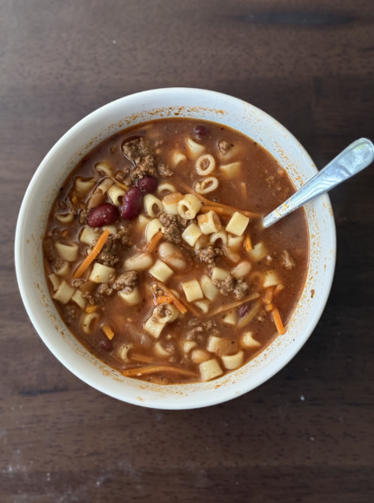
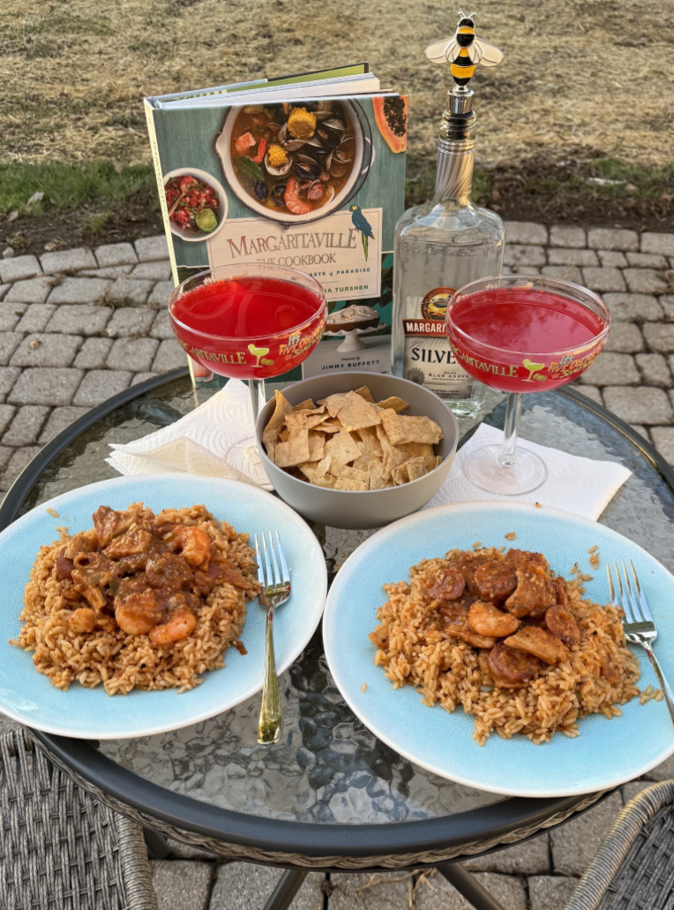
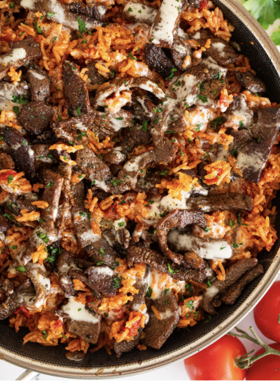

Pasta e Fagioli
Prep time: 70 minutes
Serves 6

Ingredients
- 2 tbsp olive oil, divided
- 1 lb lean ground beef
- 1 ½ cups chopped yellow onion
-
1 cup shredded carrots
-
1 tbsp minced garlic
-
3 (8 oz) cans tomato sauce
-
32 oz beef stock
-
½ cup chicken stock
-
1 tbsp Beef - Better than Bouillon
-
½ cup of water, add more if needed
-
1 (15 oz) can diced tomatoes (optional)
-
2 tsp granulated sugar
-
1 ½ tsp dried basil
-
1 tsp dried oregano
-
¾ tsp dried thyme
-
½ tsp dried marjoram
-
1 tbsp garlic powder
-
1 tbsp onion powder
-
Salt & Pepper to taste
-
1 cup dry ditalini pasta
-
1 (15 oz) can dark red kidney beans, drained and rinsed
-
1 (15 oz) can great northern beans, drained and rinsed
-
3 tbsp fresh minced parsley
-
Fresh Parmesan cheese
Instructions
-
Heat 1 tbsp of olive oil in a large pot over medium- high heat,
crumble in ground beef and cook,stirring occasionally until
cooked all the way through.
-
Drain the grease from the beef to a bowl and set aside. Heat
the remaining 1 tbsp of olive oil in the same pot.
-
Add the carrots to the pot and sauté over medium- high heat for
about 8 minutes. Add the diced onions to the same pan and sauté
together for about 6 minutes. Add the minced garlic and cook for
1 minute.
-
In the same pot add the beef and chicken broth, tomato sauce,
water, canned tomatoes, sugar, basil, oregano, thyme, marjoram,
garlic powder, onion powder, better than bouillon and cooked
ground beef then season with salt and pepper to taste.
-
Bring the pot to a boil then reduce heat to medium- low,cover
with a lid and allow to simmer, stirring occasionally, until the
veggies are soft. About 15- 20 minutes.
-
Meanwhile prepare ditali pasta according to the directions on t
he package. About minutes.
-
Strain the pasta then add them to the soup, give a good mix.
Add your kidney beans and great northern beans. Thin the soup
with a little more broth (beef or chicken).
-
Allow the soup to simmer until the beans are warmed all the way
through. About 5 minutes.
-
Allow pasta to cool 1 minute before serving with fresh Parmesan
cheese and garlic bread.
Tips
-
If you don’t plan on eating the whole pot of soup right away,
put pasta in each bowl as individual servings. Otherwise the
pasta will get soggy.
-
Store the extra pasta in a separate container in the fridge up
to 5 days.
Jimmy’s Jammin’ Jambalaya
Margaritaville Recipe
Prep time: 60 minutes
Serves 4

Ingredients
-
4 Tablespoons neutral oil (such as canola or vegetable)
-
½ pound andouille sausage, casings removed (minced)
-
½ pound smoked pork sausage (such as kielbasa), halved
lengthwise and thinly sliced into half-moons
-
¾ pound boneless, skinless chicken breast, cut into thin
slices or bite-sized cubes
-
½ small yellow onion, finely diced
-
1 green bell pepper, finely diced
-
2 tablespoons minced garlic (add more if needed for flavor)
-
½ teaspoon dried thyme (optional)
-
½ teaspoon dried oregano
-
½ teaspoon black pepper
-
Pinch of cayenne pepper
-
1 teaspoon kosher salt, plus more if needed
-
¼ cup all-purpose flour
-
1 ½ cup high-quality store-bought chicken stock
-
One 14.5 oz can diced tomatoes, undrained (blended-optional)
-
One 10 oz can RoTel Original diced tomatoes and green chiles
(blended)
-
2 tablespoons Worcestershire sauce
-
1 pound medium shrimp, peeled and deveined
-
6 cups cooked white rice, warm
Instructions
-
Place 2 tablespoons of oil in a heavy pot set over
medium-high heat. Add the andouille , pork sausage, and
chicken and cook, stirring now and then, until everything is
browned and the chicken is firm to the touch, about 15
minutes.
-
Add the onion, bell pepper, garlic, thyme, oregano, black
pepper, cayenne pepper, and salt and stir well to combine.
Cook, stirring now and then, until the vegetables are
softened, about 10 minutes.
-
Add flour and stir well to combine. Cook until the flour
gets ever so slightly browned, about 3 minutes.
-
While stirring, slowly add the chicken stock to form a
smooth sauce. Add the tomatoes, Ro*Tel’s, and
Worcestershire. Give everything a god stir and be sure to
scrape the bottom to mix in any pieces of flavor that are
stuck to the pot. Bring the mixture to a boil, reduce the
heat to maintain a simmer. Season the jambalaya with salt
and cook for 20 minutes.
-
Place the remaining 2 tablespoons of oil in a large nonstick
skillet set on high heat. Add the shrimp in an even layer,
working in batches if needed, depending on the size of your
pan, and cook until browned on both sides and just barely
firm to the touch, about 5 minutes.
-
Fold the shrimp and the cooked rice into the jambalaya. Stir
well and serve immediately.
Tips
-
Add sour cream, hot sauce and salt to taste. Store in a
covered container and store in the refrigerator for up to 1
week.
-
Best paired with fresh chips, salsa and homemade guacamole.
-
Try just folding the shrimp into the jambalaya, and serve
over white rice.
Steak, Cheese & Rice
Prep time: 30 minutes
Serves 4

Ingredients
-
1 cup long grain white rice
-
2 tablespoons olive oil
-
2 tablespoons butter
-
1 small onion (finely chopped)
-
1 tablespoon minced garlic
-
2 cups chicken broth
-
8 ounce tomato sauce
-
½ teaspoon salt
-
½ teaspoon pepper
-
1 teaspoon cumin
-
1 teaspoon dried cilantro
-
1 pound of sirloin steak
-
2 tablespoons butter
-
Montreal steak seasoning
-
White queso
-
Fresh Cilantro
-
Flour tortillas
Instructions
-
Rinse rice with cool water and strain. Add rice to a
skillet over medium-high heat. Add 2 tablespoon of
olive oil and stir the rice around the skillet, letting
it toast up a little bit. About 5 minutes.
-
Add the chopped onion and minced garlic. Give it a good
mix. Add 2 cups of chicken broth, 1 can of tomato sauce,
and all the seasonings. Stir well and let cook until it
starts bubbling. Once bubbling, cover with a lid, lower
the heat to medium-low, and cook until rice is tender.
About 20 minutes.
-
While the rice is cooking, cut the steak in the
preferred method. Add 2 tablespoons of butter to another
skillet over medium-high heat. Add the cut up steak and
season with some steak seasoning. Once the steak is
cooked to your liking remove the skillet from the heat.
About 10 minutes.
-
Top the cooked rice with the steak and pour some white
queso over the skillet of steak and rice then top with
fresh cilantro. Serve as is or inside of some flour
tortillas. About 2 minutes.
Tips
Try serving with:
- Fresh salsa
- Homemade guacamole
- Pico de Gallo
- Taco sauce
- Sour cream
- Shredded cheese
- Black beans